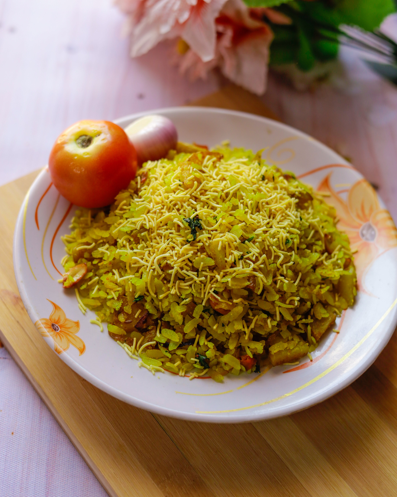
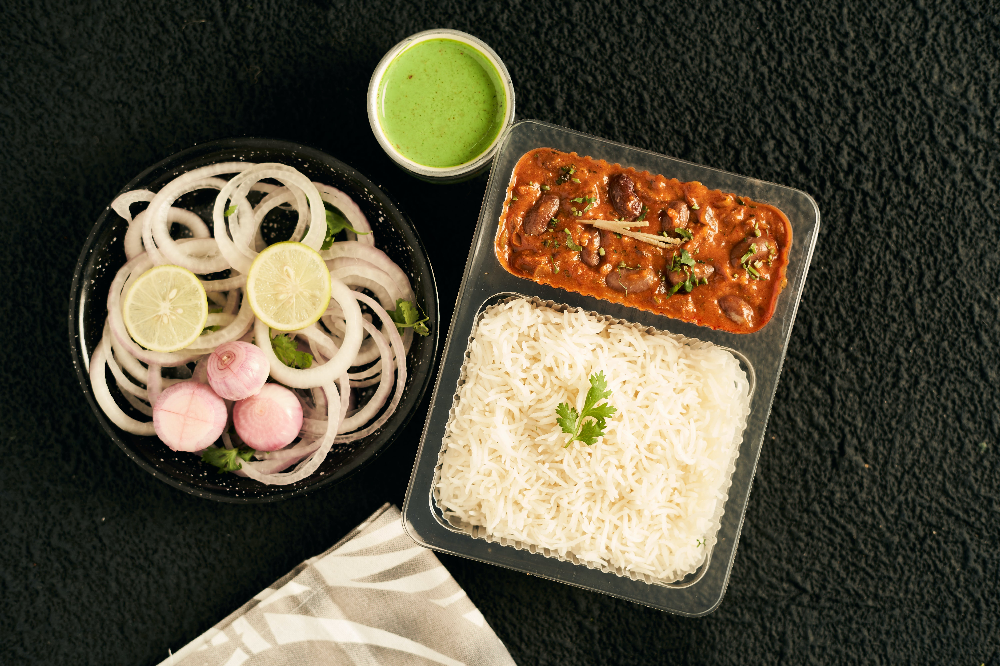
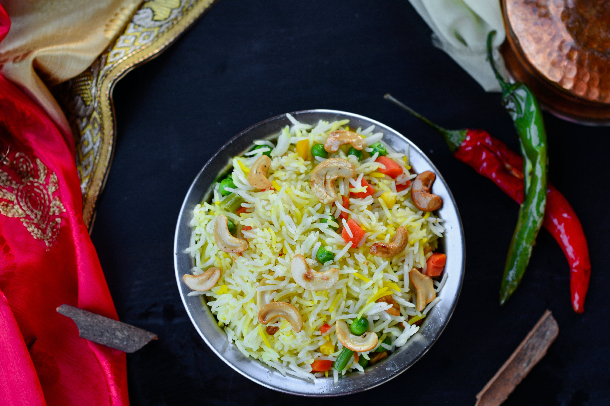
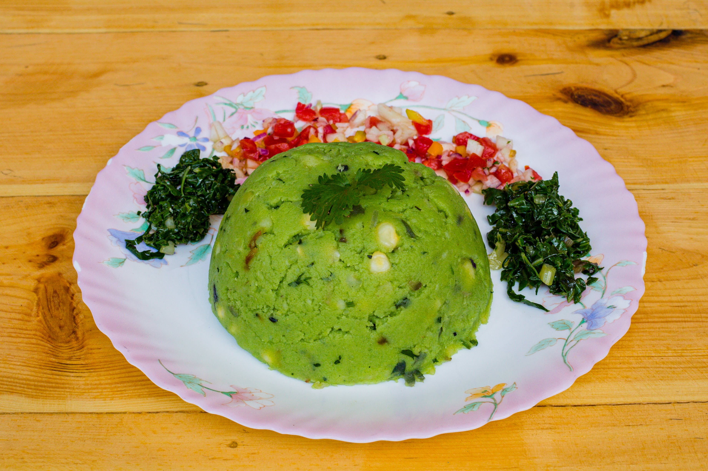
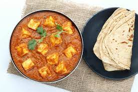
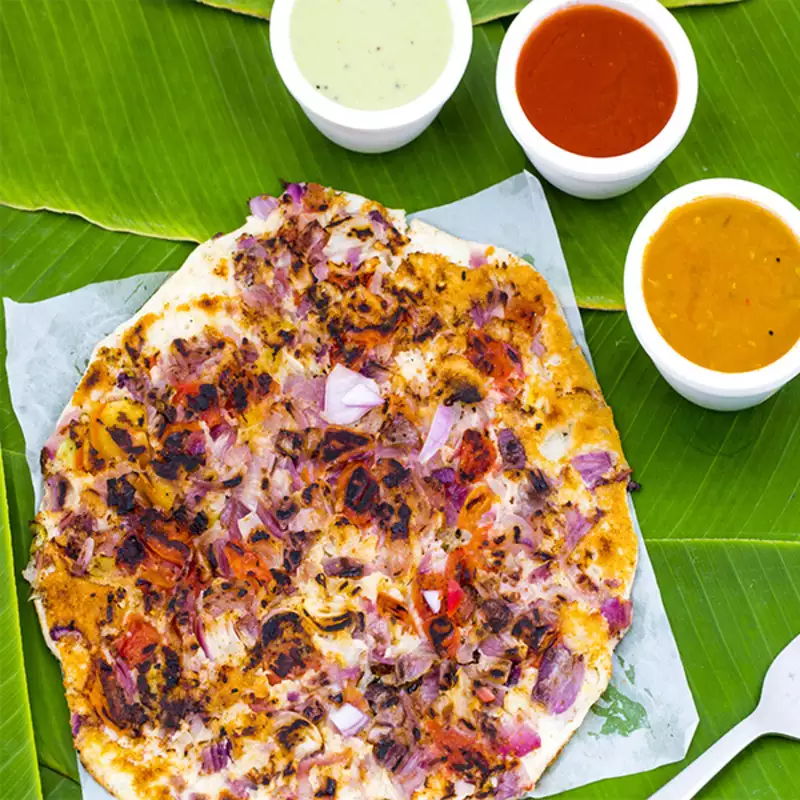
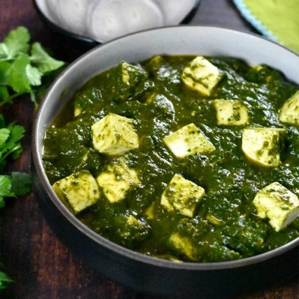
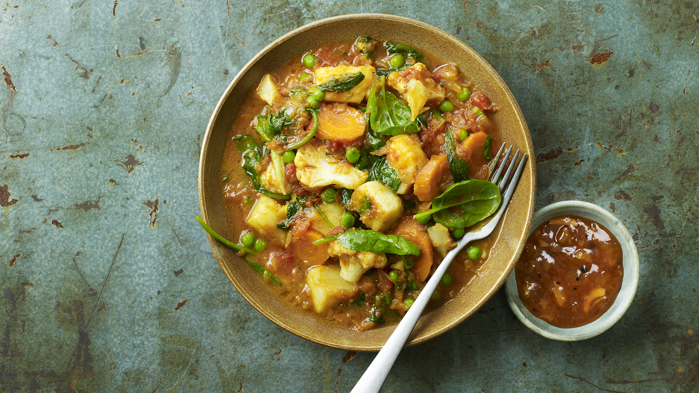
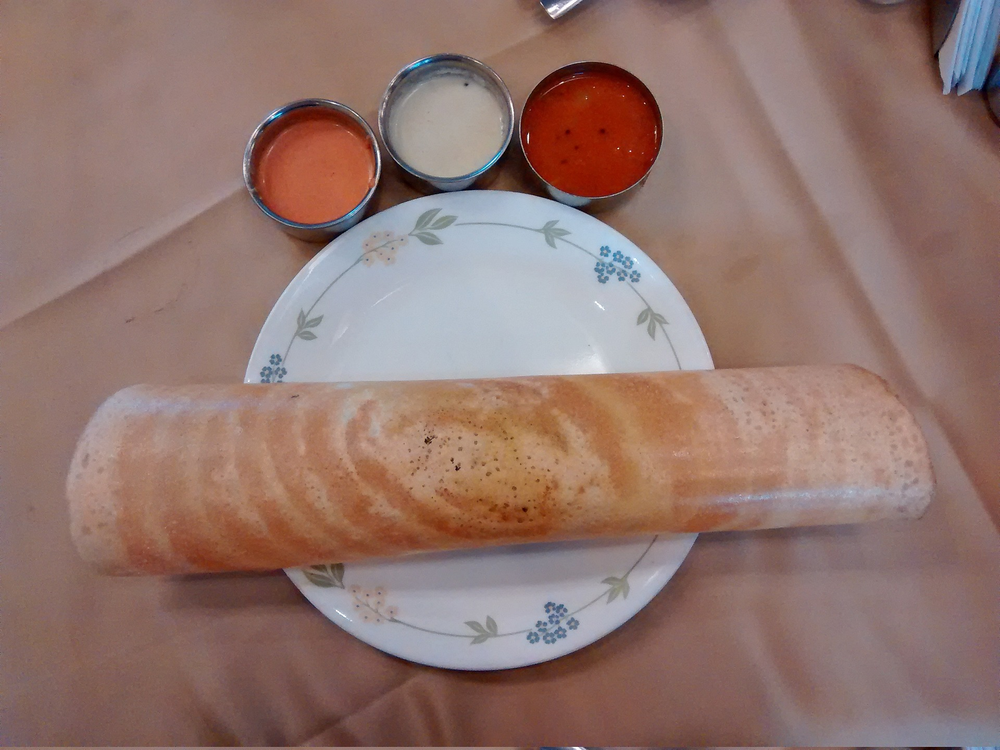

DAY 1
Breakfast:
-
POHA
Poha, also known as flattened rice or beaten rice, is a popular and nutritious food in many parts of India and Southeast Asia. It is made by parboiling rice and then flattening it to produce thin, flat flakes. Poha is a versatile ingredient that can be used in various dishes, and it offers several nutritional benefits. Here are some details about Poha in the diet:
Lunch:
-
RAJMA CHAWAL
Rajma Chawal is a popular North Indian dish that consists of red kidney beans (rajma) cooked in a thick tomato-based gravy, served with steamed rice (chawal). While this dish is delicious and nutritious, it's essential to consider its nutritional components and how it fits into a balanced diet.
Dinner:
-
VEGETABLE BIRYANI
Vegetable biryani can be a nutritious and flavorful addition to a well-balanced diet.
DAY 2
Breakfast:
-
UPMA
Upma is a popular South Indian dish that is often consumed as a breakfast or snack item. It is made from semolina (sooji or rava) and typically includes various spices and vegetables.
Lunch:
-
AALO GOBI

Aloo Gobi is a popular Indian dish that consists of potatoes (aloo) and cauliflower (gobi) cooked together with various spices. It's a flavorful and nutritious vegetarian dish that can be a part of a balanced diet when prepared in a health-conscious way.
Dinner:
-
PANEER ROTI
Paneer roti is a type of Indian flatbread that incorporates paneer, which is a type of Indian cottage cheese, into the dough. Including paneer in your diet can provide a good source of protein, calcium, and other nutrients.
DAY 3
Breakfast:
-
IDLI

Idli is a popular South Indian dish that has gained popularity worldwide. It is a type of savory rice cake made by steaming a batter consisting of fermented rice and urad dal (black gram) lentils. Idli is not only delicious but also considered a healthy option in many diets.
Lunch:
-
DAL MAKHNI

Dal Makhani is a popular North Indian dish made with black lentils (urad dal) and kidney beans (rajma), cooked with butter and cream. While it is a delicious and flavorful dish, it is important to consider its nutritional aspects, especially if you are incorporating it into your diet.
Dinner:
-
MASALA KHICHDI

Masala khichdi is a flavorful and nutritious dish that is popular in Indian cuisine. It is made by cooking rice and lentils together with a mix of vegetables and spices.
DAY 4
Breakfast:
-
DHOKLA

Dhokla is a popular Indian steamed cake made from fermented batter, typically using rice and chickpea flour. It's a staple in the Indian diet and is known for being light, spongy, and flavorful. Dhokla can be a relatively healthy addition to your diet, depending on the ingredients used and your overall dietary goals.
Lunch:
-
BHINDI

Bhindi, also known as okra or ladyfinger, is a green vegetable that is commonly consumed in various cuisines around the world. It is a nutritious and low-calorie vegetable that can be a valuable addition to a healthy diet.
Dinner:
-
BAINGAN BHARTA

Baingan Bharta is a popular Indian dish made with roasted and mashed eggplant (baingan or aubergine). It is a delicious and nutritious option that can be included in a balanced diet.
DAY 5
Breakfast:
-
UTTAPAM
Uttapam is a popular South Indian dish that is often consumed as a breakfast or snack item. It is made from a fermented batter of urad dal (black gram) and rice, similar to the batter used for making dosa. Uttapam is thicker and softer than dosa and is typically topped with various vegetables, making it a nutritious and delicious option.
Lunch:
-
PALAK PANEER
Palak Paneer is a popular Indian dish that combines spinach (palak) with paneer (Indian cottage cheese). It's a nutritious and flavorful dish that can be a part of a balanced diet.
Dinner:
-
VEGETABLE CURRY
Vegetable curry can be a nutritious and delicious addition to a balanced diet. It offers a variety of health benefits as it typically includes a mix of colorful vegetables, herbs, and spices.
DAY 6
Breakfast:
-
METHI THEPLA

Methi thepla is a popular Indian flatbread that originated in the western state of Gujarat. It is known for its distinctive flavor, which comes from the use of fresh fenugreek leaves (methi) and a blend of spices.
Lunch:
-
MOONG DAL

Moong dal, also known as green gram or mung bean, is a type of legume that is commonly used in Indian cuisine and other Asian cuisines. It is a versatile ingredient that offers numerous health benefits and is a popular choice for inclusion in a balanced diet.
Dinner:
-
MUSHROOM

Mushrooms are a versatile and nutritious food that can be a valuable addition to a balanced diet.
DAY 7
Breakfast:
-
MASALA DOSA
Masala Dosa is a popular South Indian dish that consists of a thin, crispy rice and urad dal (black gram) crepe filled with a spiced potato mixture.
Lunch:
-
MASOOR DAL

Masoor dal, also known as red lentils, is a popular pulse in many cuisines around the world. It is a versatile and nutritious ingredient that can be incorporated into a balanced diet.
Dinner:
-
CHOLE BHATURE

Chole Bhature is a popular North Indian dish that consists of spicy chickpeas (chole) served with deep-fried bread (bhature). While it is a delicious and flavorful dish, it is not considered the healthiest option due to its deep-frying and rich ingredients.